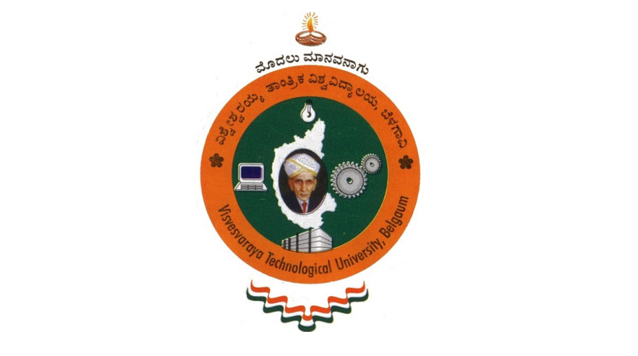

A Major project Report on
MODELLING AND DETECTION OF CAMOUFLAGING WORMS
A Dissertation submitted in partical fulfilment of the requirements for the award of degree of
MASTER OF COMPUTER APPLICATIONS
By
PRAVEEN KUMAR MOSALI
(USN:INT14MCA39)
Submitted to
Visvesvaraya Technological University
jnanaSangama
,Belgaum-590 018,Karnatka,India.

In partical fulfilment of the requirements for the award of the Degree of
Mster of Computer Applications
Under the guidance of
( Asst.Prof ) Mariyan Richard
DEPARTMENT OD MCA
NITTE MEENAKSHI INSTITUTE OF TECHNOLOGY
P.B.No.6429,Yelahanka,Begaluru -560 064